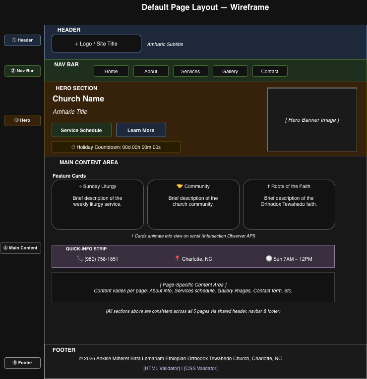
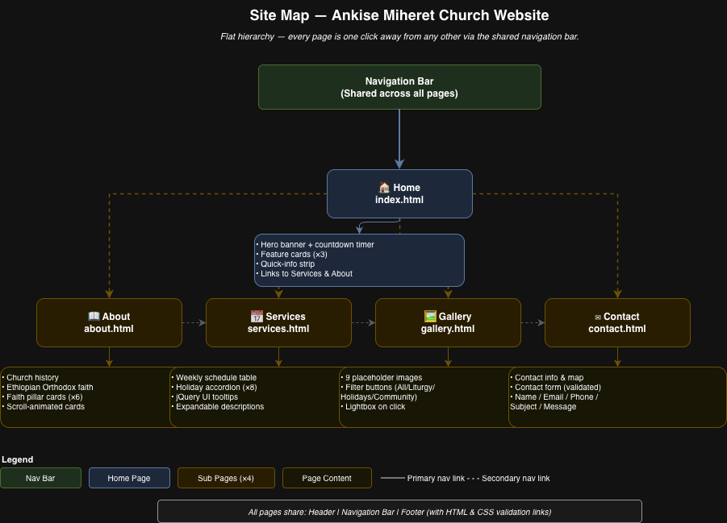

Project Overview
Section 1 — Project Overview
Purpose / Function
This web application is an informational website for Ankise Miheret Bata Lemariam Ethiopian Orthodox Tewahedo Church, located in Charlotte, North Carolina. The purpose of the site is to improve the church's online visibility, provide service and holiday schedule information to members and visitors, and enable community members to contact the church. No website currently exists for this congregation.
Intended Users
- Ethiopian Orthodox community members in the Charlotte area seeking service times and holiday information
- New visitors or prospective members looking to learn about the church and the Ethiopian Orthodox faith
- Members of the broader public interested in learning about Ethiopian Orthodox Tewahedo Christianity
Content Overview
The website will contain information about the church and its history, an explanation of the Ethiopian Orthodox Tewahedo faith, a weekly and annual service/holiday schedule, a photo gallery of church events, and a contact form with the church's location and phone number.
Section 2 — Client Information
| Client Name | Yoseph Duresso |
|---|---|
| Organization | Ankise Miheret Bata Lemariam Ethiopian Orthodox Tewahedo Church, Charlotte, NC |
| yduresso@charlotte.edu | |
| Phone | (980) 758-1851 |
Section 3 — Wireframe

Section 4 — Site Map
The site consists of five pages. All pages are interconnected via a shared navigation bar, and the hierarchy is flat — every page is one click away from any other page.

Home (index.html)
├── About (about.html)
├── Services (services.html)
├── Gallery (gallery.html)
└── Contact (contact.html)
All pages link to each other via the nav bar.
Section 5 — Page Design
Page 1 — Home (index.html)
- Purpose
- Serves as the landing page; introduces the church, displays an upcoming holiday countdown, and provides quick access to all other sections.
- Audience
- All users — first-time visitors, members, and the general public.
- Content
- Church name and Amharic title, hero banner image, holiday countdown timer, three feature cards (Sunday Liturgy, Community, Roots of the Faith), and a quick-info strip with phone number, location, and service hours.
- Data Entry
- No user data entry.
- Buttons / Links
- Two call-to-action buttons ("Service Schedule" linking to services.html and "Learn More" linking to about.html). Navigation bar links to all pages.
- Actions
- Clicking nav links navigates to other pages. Countdown timer updates every second via JavaScript. Cards animate into view on scroll using the Intersection Observer API.
Page 2 — About (about.html)
- Purpose
- Explains the history and beliefs of the Ethiopian Orthodox Tewahedo Church and the mission of this specific congregation.
- Audience
- New visitors, prospective members, and anyone curious about the faith.
- Content
- Church description, history of the Ethiopian Orthodox faith (4th-century origins, Tewahedo doctrine, Ge'ez liturgy), and six "faith pillar" cards (Prayer, Fasting, Tabot, Scripture, Liturgy, Community).
- Data Entry
- No user data entry.
- Buttons / Links
- Navigation bar links only.
- Actions
- Cards animate into view on scroll using the Intersection Observer API (JavaScript).
Page 3 — Services (services.html)
- Purpose
- Displays the weekly service schedule and provides detailed descriptions of major Ethiopian Orthodox holidays.
- Audience
- Members seeking schedule info, visitors planning to attend, and anyone interested in the holiday calendar.
- Content
- Weekly schedule table (Sunday Liturgy, Sunday School, Wednesday Prayer, Monthly Qidase) and an accordion listing 8 major holidays — Gena, Timkat, Fasika/Easter, Enkutatash, Meskel, Lideta, Kidane Mehret, and Buhe — with English and Amharic names and descriptions.
- Data Entry
- No user data entry.
- Buttons / Links
- Accordion headers are clickable to expand/collapse holiday details. jQuery UI tooltips appear on hover over table rows.
- Actions
- Clicking an accordion header opens its holiday description and closes any other open item (JavaScript / jQuery). Hovering over a table row shows a tooltip with a brief service description (jQuery UI).
Page 4 — Gallery (gallery.html)
- Purpose
- Showcases photos of church services, community events, and holiday celebrations.
- Audience
- All users, especially prospective members wanting to see the community.
- Content
- 9 placeholder images organized into three categories: Liturgy, Holidays, and Community.
- Data Entry
- No user data entry.
- Buttons / Links
- Filter buttons (All, Liturgy, Holidays, Community) to show/hide images by category. Each image is clickable to open a lightbox.
- Actions
- Clicking a filter button shows only images in that category using jQuery fade effects. Clicking an image opens a lightbox overlay with a larger view and a caption (jQuery). Pressing Escape or clicking outside the lightbox closes it.
Page 5 — Contact (contact.html)
- Purpose
- Provides church contact information and allows users to send a message inquiry.
- Audience
- Anyone wishing to contact the church — prospective members, community inquiries, and prayer requests.
- Content
- Phone number, location (Charlotte, NC), service hours, a scriptural quote in English and Amharic, a contact form, and an embedded Google Map.
- Data Entry
- Yes — Name, Email, Phone (optional), Subject (dropdown), Message (textarea).
- Validations
- Name required; Email required and must match valid email format (regex); Subject required (must select from dropdown); Message required and must be at least 10 characters. Errors display inline beneath each field.
- Buttons / Links
- Submit button; Subject dropdown for selection; nav bar links.
- Actions
- On valid submission, the form hides and a success message is displayed (jQuery). On invalid submission, error messages appear beneath the relevant fields.
Section 6 — Dynamic Functionality
1 — Holiday Countdown Timer (index.html)
Description: A live countdown clock that calculates and displays the
days, hours, minutes, and seconds until the next major Ethiopian Orthodox holiday.
Updates every second using JavaScript's setInterval.
Purpose: Keeps community members informed and builds anticipation for upcoming celebrations, giving the homepage an active, engaging quality.
Example of similar interactivity: https://www.timeanddate.com/countdown/
2 — Accordion for Holiday Descriptions (services.html)
Description: Clicking a holiday name expands a panel showing its date, Amharic name, and a description, while automatically collapsing any previously open panel. Built with jQuery UI Accordion.
Purpose: Keeps the page clean and uncluttered while making detailed holiday information accessible on demand without overwhelming the user.
Example of similar interactivity: https://jqueryui.com/accordion/
3 — Interactive Photo Gallery with Lightbox (gallery.html)
Description: Category filter buttons (using jQuery fade effects) show or hide images by type (Liturgy, Holidays, Community). Clicking any image opens it in a full-screen lightbox overlay with a caption.
Purpose: Provides an engaging, visual way to showcase community life and lets users focus on the category they care about most.
Example of similar interactivity: https://fancyapps.com/fancybox/
4 — Contact Form Validation (contact.html)
Description: Client-side jQuery validation checks that all required fields are filled correctly — including an email format regex check — before allowing submission. Inline error messages appear beneath invalid fields; a success message replaces the form on valid submission.
Purpose: Ensures the church receives complete and properly formatted inquiries, reducing incomplete or malformed submissions.
Example of similar interactivity: https://jqueryvalidation.org/
5 — jQuery UI Tooltips (services.html)
Description: Hovering over a service schedule table row displays a jQuery UI tooltip with a brief description of that service (e.g., duration, language of liturgy).
Purpose: Provides helpful context without cluttering the table, keeping the schedule easy to scan while still offering detail to curious users.
Example of similar interactivity: https://jqueryui.com/tooltip/
6 — Scroll-Animated Cards (index.html, about.html)
Description: Cards fade and slide into view as the user scrolls down the page. Implemented using the native Intersection Observer API — no external library required.
Purpose: Creates a polished, modern feel that rewards scrolling and draws attention to each content section as it enters the viewport.
Example of similar interactivity: https://michalsnik.github.io/aos/
Author: Musie Tilahun
Date: April 4, 2026
Course: ITIS 3135 — Web App Design and Development, Spring 2026
References:
- jQuery UI documentation — https://jqueryui.com/
- jQuery Validation Plugin — https://jqueryvalidation.org/
- Animate on Scroll (AOS) library — https://michalsnik.github.io/aos/
- Fancybox lightbox — https://fancyapps.com/fancybox/
- Time and Date countdown example — https://www.timeanddate.com/countdown/